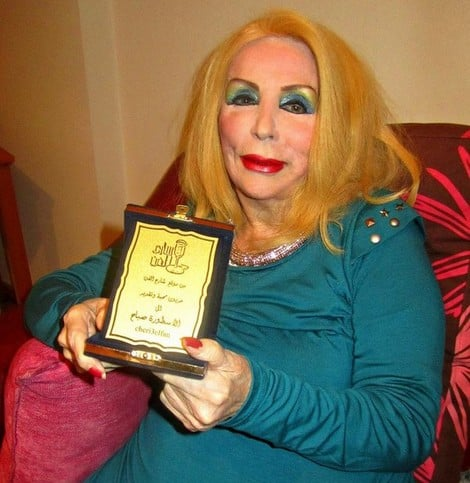

صباح - الشحرورة اللبنانية
جانيت فغالي المولودة العام 1927 (حسب معظم المصادر) هي من آخر المغنيات اللاتي عاصرن عصر التحديث الموسيقي وتنوّع وتطوّر العديد من أشكاله وأساليبه. ولعلها كانت من هؤلاء اللائي ساهمن في ذلك التطوّر والتنوّع بتقديمها وتمكّنها في القيام بأنواع عديدة من الغناء تتراوح بين أغاني الأفلام، الاستعراض، المسرحيات الغنائيّة، المواويل (المصريّة واللبنانيّة) وغيرها. وكانت على وعي بهذا الدور، ولأنّها بنت هذا الجيل وشاهدة على تلك الظاهرة. فنرى مثلاً في مقابلة لها مع التليفزيون السعودي تشرح ذلك (ولو بشكل سطحي)، وتؤكّد تفضيلها مواكبة ذلك التطوير والإساهم فيه على استحضار الماضي والتمسك به.
ولكن لا تنتهي قصة صباح ببراعتها في تقديم مختلف أنواع الغناء والأداء بكثير من الخصوصيّة والتفرّد أحياناً، وبشكل فيه كثير من الشخصنة في أحيان أخرى. ولكن المثير في قصة صباح، بالنسبة لهذا المقال، وكما أشار العديد من الكتّاب من قبل، هو خلقها صورة معيّنة للـ"مؤديّة" أو "المغنّية" في السياق السياسي والاجتماعي للمنطقة العربيّة في القرن العشرين– والتي كانت تمرّ بمرحلة شديدة الشبه بما حدث للموسيقى التي تكلّمت هي عنها.
ولعل من أهم ملامح الميراث الفني والإنساني الذي تركته صباح هو إثارتها الكثير من الأسئلة عن فكرة "العجز"، وجسد المرأة، وكيفية استقبال وإدراك المرأة العجوز، وكيفيّة تقبّل تلك الفكرة في ظل عداء واضح لمبدأ المرأة التي أصابها العجز، ولكنّها مع ذلك تصر على تشبّثها بالحياة: وفي حالة صباح استمرارها في الغناء والأداء رغم ظهور أعراض السن والشيخوخة عليها بشكل لا يمكن إغفاله.
يكشف لنا ظهور صباح المتكرّر على مر الثلاثة العقود الأخيرة، واستغلال الإعلام للنزعات الأخلاقيّة للكثيرين– والتي تتعلّق بما هو مقبول ولائق من سيدة عجوز، عن علاقة المجتمع العربي بالعجز، واستقباله وتعامله مع جسد المرأة وشيخوخته.
الشيخوخة وجسد المرأة
توضح "بيفرلي سكجز" أن "الأنوثة المقبولة تقتضي قدراً كبيراً من "العمل" على تهذيب وتغيير الجسد– والذي يفرض على المرأة التكيّف مع تلك المعايير التي يفرضها المجتمع لما هو مقبول ومرغوب. ولكن لا يتوقف ذلك فقط على القيام بذلك "العمل"، بل يجب أن يظل ذلك التغيير "مستتراً"، وإلا تم اعتباره سوقيّ ورخيص".
وينسحب ذلك بشكل أكبر على جسد المرأة في مرحلة الشيخوخة، فيُظهر لنا النزعات الأخلاقيّة لشيطنة ما يسمى بـ"المسخ الأنثوي" – وهو حالة تلك السيدة التي تحاول أن تخفي علامات الشيخوخة والسن، ولكن تظل مع ذلك آثاره ملحوظة. فليست المشكلة هنا في محو آثار العمر من الناحية الجماليّة فقط، فلسنا بصدد جماليات السن، ولكن الحكم الأخلاقي المرتبط بمثل تلك المعايير الجماليّة، والذي لا يتوقف عن تعريف البشاعة من منظور مرئي/ نظري، ولكن يتخذ بعداً أخلاقيّاً – قيميّاً.
هل أصاب العجز صباح فقط؟
والسؤال هنا هل اختُصت صباح بفكرة العجز مع الإصرار على الظهور أو الغناء والتمثيل رغم دخولها في مرحلة الشيخوخة؟ نجد أن الإجابة: لا. فإذا عقدنا مقارنة بين أعمار أم كلثوم و صباح، نجد أن أم كلثوم أصرّت على الغناء حتى بعد أن جاوزت السبعين من عمرها. ولم تكتف فقط بأنها ظلّت تغني، ولكنّا غنّت أغانٍ من شأنها إثارة سخرية المستمعين في حالة قيام أي مغنية أخرى في عمر أم كلثوم بغنائها.
فالمجتمع العربي المحافظ لا يرضى بقبول فكرة أن تقف سيدة في الخامسة وسبعين من عمرها على مسرح تغنّي عن شوقها لحبيبها، ساردةً قصّة حبهما لمدة ساعة أو يزيد (ليلة حب، 1973). ولكن هذا المجتمع تقبّل تلك الفكرة من أم كلثوم، ولم يجرؤ أحد على اتهام أم كلثوم بالعجز والخرف مع ظهور آثار الشيخوخة بوضوح على صوت أم كلثوم من غلاظة وانعدام المرونة والانسيابيّة: والتي هي من أهم إمارات العجز (على الرغم من أنه ظل صوتاً مميّزاً حتى وفاتها، ولكن أصبح من الجلي أنه صوت سيدة عجوز) ولم ينتقدها أحد على اختيار موضوعات أغانيها والتي من الممكن اعتبرها غير "ملائمة" لسيدة جاوزت السبعين.
ما ذنب صباح؟
ليس الموضوع هو "صوت السيدة العجوز" ولا موضوعات الأغاني. فنرى مثلاً أن كثيرين امتدحوا أداء صباح لأغنية "ساعات ساعات" (كلمات عبد الرحمن الأبنودي وتلحين جمال سلامة) في فيلم "ليلة بكى فيها القمر" (1980)، مع اعتراضهم الشديد على القصّة ودور صباح كسيّدة ترتبط برجل يصغرها في السن. وهنا تظهر بوضوح إشكاليّة ما تمثّله صباح: امرأة تحدّت مقتضيات السن، وعبّرت عن رغبتها (سواءً في أعمالها أو في حياتها الشخصيّة) في، ليس فقط بالارتباط، ولكن في الارتباط برجل يصغرها في العمر مع استمرارها في تقديم نفسها كسيدة جميلة مرغوبة (سواء تم ذلك عن طريق عمليات التجميل أو بالأصباغ وأدوات التزيين).
لم تكن صباح المغنية الوحيدة التي لجأت إلى عمليات التجميل أو ممّن استمرن في الغناء عن الحب والغرام رغم تهالك صوتها وشيخوخته، لكن ما تفرّدت به صباح هو رفضها لما هو مفروض ومتوقّع من سيدة عجوز من إعلانها الزهد في الرجال والجنس، حتى إذا ظلت تغنّي للعشق والهوى.
ولعل مقارنة أخرى مع مطربة مثل وردة، والتي لجأت أيضا لعمليات التجميل واعترفت بذلك صراحة والتي ظلت تغني للحب والمحبين حتى وفاتها. إذ لم تتعرّض لمثل الانتقاد الذي تعرّضت له صباح. وفي لقاء لها أكدّت أنها تخشى العجز وتخشى الموت وأنها "مقيّدة" بجسدها الوهن. ولكن ما أنقذ وردة من حس العقاب الجماعي الذي أصاب صباح هو زهدها في الرجال وإعلانها الوفاء لذكرى بليغ حمدي (حتى أن تكاثرت الشائعات عن زواجها سرّاً، لأنها أصرت حتى وفاتها على عدم الإفصاح أو الإعلان عن إعجابها أو تعلقها بشخص أو دخولها في علاقات أخرى).
ورغم أن صباح أكدت في العديد من المواضع أنها تنوي الاعتزال والانسحاب من الحياة العامة عند نقطة ما (فنراها مثلاً في لقائها مع سلوى حجازي عام 1966 تؤكد رغبتها لتفرغها لأسرتها وأبنائها في المستقبل) ولكن ما حدث أنّها استمرّت في الغناء والأداء حتى آخر فيلم قامت بالتمثيل فيه "أيام اللولو" (1986) عندما قاربت الستين. بينما نجد أن عمر صباح عندما توقفت عن التمثيل أو الأداء ليس كبيراً، ولا يمكن لأحد الادّعاء بأن 60 عاماً تشكل فكرة "المسخ الأنثوي" بأيّة حال.
"عجوز شمطاء"
حتى بدايات التسعينيّات، لم تكن صباح بالفعل قد تجاوزت السبعين من عمرها بعد، ولكن الخطاب العام تصاعد ضد "العجوز الشمطاء" التي تضع مساحيق التجميل، والتي تزوجت برجل (فادي لبنان) في عمر أولادها، مصرّة على الغناء وأداء الحفلات. ومنذ ذلك الوقت، أصبحت زيجات صباح وظهورها المستمر عنصراً أساسيّاً من تغطية الإعلام لأخبار الفنانين وأعمالهم. وظاهرة كاشفة لكيفيّة تعاطي المجتمع العربي مع تقدّم في العمر والرغبة في الحياة والظهور.
لم تكتف صباح فقط بالظهور وإجراء اللقاءات، ففي العام 2009 قامت بإعادة تصوير وغناء أغنية "يانا يانا"، من فيلم "كانت أيام" (1970)، من تلحين بليغ حمدي وكلمات مرسي جميل عزيز. كانت صباح قد بلغت من العمر حوالي 82 سنة عندما غنت مع المطربة رولا سعد أغنيّتها "يانا يانا". وتظهر صباح مرتدية فستاناً أحمر، شقراء كعادتها وبكامل زينتها وحليها. والأمر الذي لا يثير الدهشة هو ضعف ووهن صوتها والذي تم التلاعب به رقميّاً لكي لا يسمع كما هو.
وأدت تصوير الأغنية لترسيخ فكرة "المسخ" بحق، إذ طالب الكثيرون صباح بـ"احترام ماضيها" وتدبّر حالها كسيّدة جاوزت الثمانين من عمرها. وكأن السرديّة المفترضة للعجز هي اعتزال الحياة العامة، وهجر الرغبة في الحياة وإظهار إمارات العجز وتبني الزهد والترك المتدرج للحياة تمهيداً للموت.
وعلى عكس ما هو متوقّع، لم تأبه صباح بما قيل عنها، وظلّت تظهر إعلاميّاً، وتتكلّم بصراحة شديدة عمّا تفعله الشيخوخة وكيف تتعامل معها مع إصرارها واستمرارها على الظهور دائماً بالشعر المصبوغ والحلي ومساحيق التجميل. ففي العام 2010، وبعد إصابتها بجلطة، أجرت لقاءً مع المذيعة نضال الأحمديّة تتكلم فيه عن روتينها اليومي في الإستيقاظ ووضع المكياج وارتداء الحلي وغيرها.
يكشف جسد صباح العجوز المطلي بالأصباغ والمساحيق عن المأزق المزدوج لمعنى العجز من ناحية، ومعنى العجز حين يرتبط بجسد المرأة من ناحية أخرى. فلا يمكن لأحد أن يدعي أن سنين العمر باختيار الإنسان، فالإنسان لا يعرف إلى أي سن سيعيش، والمسؤوليّة الأخلاقيّة التي تم إلقاؤها على صباح لأنها عاشت 87 سنة ليس فقط درباً من العبث، بل موقفاً واضحاً من رغبتها في أن تعيش مستمعة بحياتها حسبما ارتأته هي من معاني المتعة.
والامتعاض والحنق الأخلاقي الذي أثارته طريقة صباح في إعلان تمسكها بالحياة، ورغبتها ألّا تختفي أو تتوراى عن الأنظار لأنها "كبرت" أو لأنها في "خريف العمر" جاء في تناقض واضح للحيّز والدور الذي يلعبه السن في تحديد ما هي الاختيارات والطرق المقبولة للتعبير عن تلك الاختيارات، ذلك بالنسبة للمرأة في ظل سردية الاعتزال والزهد كاستنتاج طبيعي ومتوقع في مرحلة العجز والشيخوخة.
المراجع
كتب المؤرخ وجيه ندي أن صباح ولدت 1925. ولكن في معظم الصحف و الجرائد ذكرت سنة ميلادها 1927 المصدر
بيفرلي سكجز، "التكوين في الطبقة و النوع: لتكون محترم"، سايدج، 1997
نيال ريتشدسون و آدم لوكس (محرران)، "دراسات الجسد: الأساسيات"، روتلدج، 2014